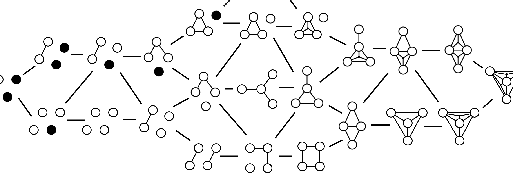
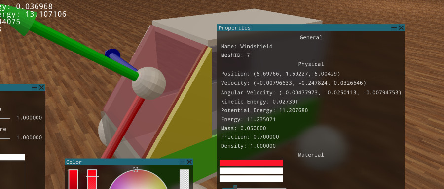
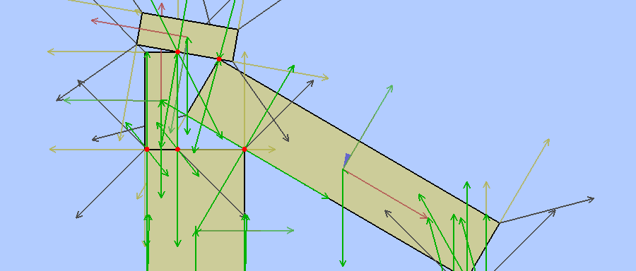
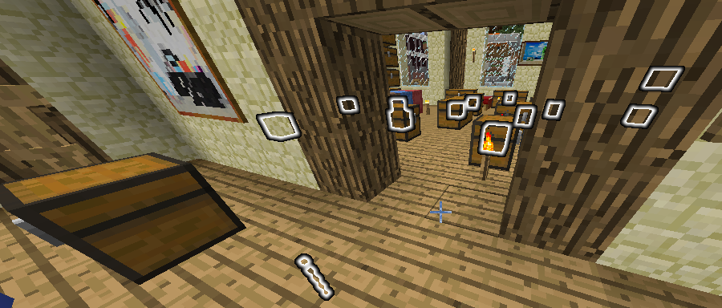
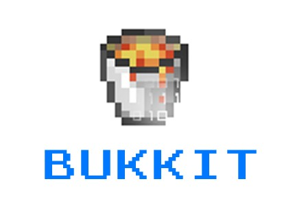
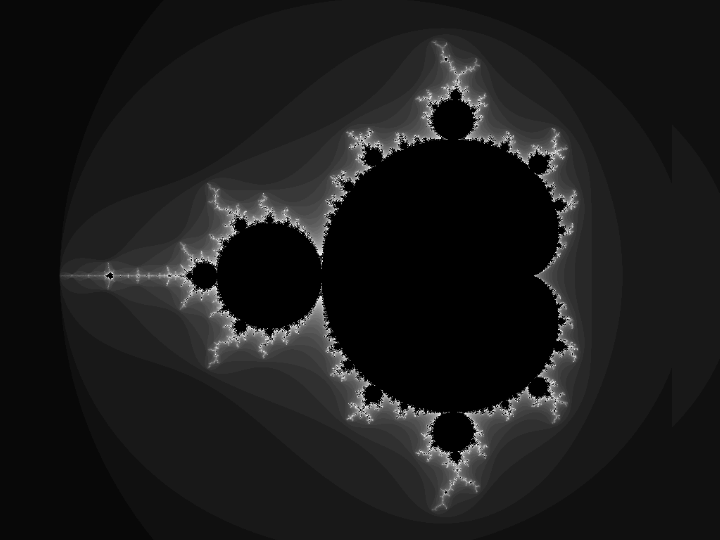
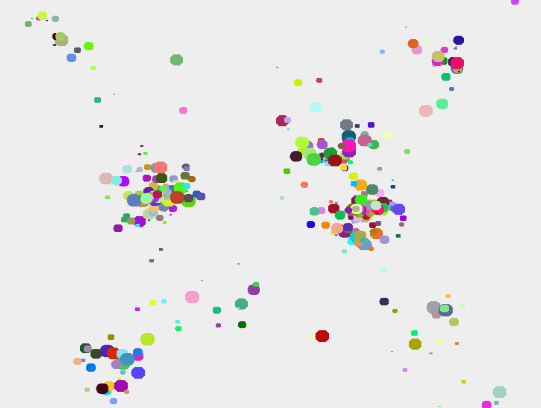

Featured Projects

The Quest for finding The Ninth Dedekind Number
C++ Verilog
September 2020-Ongoing
As a continuation of my master's thesis, I'm working together with my former promotor Prof. Patrick Decausmaecker and mentor Jens Goemaere to compute the Ninth Dedekind Number.
I proved that this computation is possible with a modestly sized FPGA cluster, for which I was able to perform the first computation of the set of all interval sizes in 7 variables, a feat never achieved before!
All source code will become available once the project finishes sometime early 2022.

Physics3D
C++ OpenGL
December 2018 - 2021
A plain C++ 3D Physics engine, with major focus on performance and ease of use. Downloads
The interface and rendering are done by Olympus112, while I work on physics engine itself.
A document with some of the systems and math explained can be found here.
The interface and rendering are done by Olympus112, while I work on physics engine itself.
A document with some of the systems and math explained can be found here.
Uniluc
PHP / SQL / JavaScript
September 2017 - 2019
Uniluc is a student community aimed at bringing together students from all over the faculty to game.
It is host to a thriving discord group and provides various game servers.
Smaller projects

Physics2D
Java / LWJGL3
July 2018
This java-based physics engine works using spring physics.
It was mostly for figuring out how to build a simple physics simulator, as well as messing around with OpenGL.
From this sprung a collaboration to build a serious 3D physics engine in C++, which became Physics3D.
.jar

ItemFinder
Java / Bukkit
August 2017
Have you ever lost something and wish you could just CTRL-F it?
Well it's a shame that doesn't exist in the real world, but in minecraft you now sure can!
ItemFinder looks for a given item in all the containers around you, and marks them for easy retrieval.
.jar

AbbaCaving
Java / Bukkit
August 2016
A minecraft bukkit plugin to manage so-called 'abba matches' in which players rush to mine as many minerals in a given timeframe.
The player with the most minerals wins the match and receives the collective resources mined by the group.
.jar

Fractal
Java
December 2015
This program draws Mandelbrot and Julia fractals. The user can scroll around and zoom in on whatever portion they wish.
It is CPU based, so performance is limited.
.jar

Planets
Java
Januari 2015
My first finished graphical project. A simple simulation of planets orbiting and attracting one another.
.jar